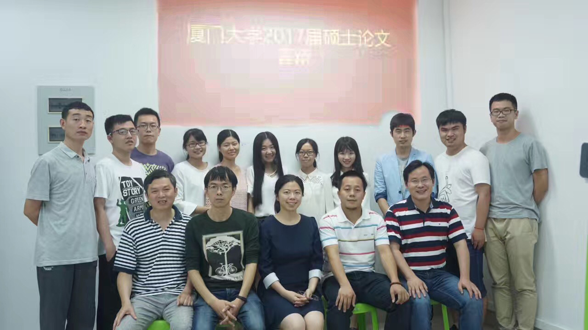
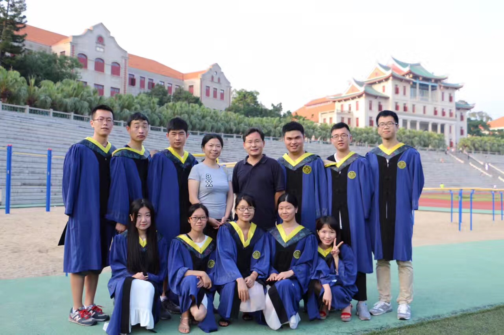

时光荏苒，凤凰花再一次开在嘉庚像下。在这个不平凡的六月，我实验室又有一批学子将要离开芙蓉湖的襁褓，走向社会，去到一个新的地方。
2017年5月19日，厦门大学通信工程系智能数据分析与处理实验室2014届硕士研究生论文答辩顺利举行，答辩委员会由丁兴号教授，蔡聪波、曾德炉、廖英豪、黄悦副教授组成。实验室全体成员参与了本次的答辩会。参与答辩成员为（按答辩顺序）吴文磊、林炜、吴佳雯、朱攀、吴凡、曾益清、陈曦、王秋红、胡宇雯、刘新、丘琴秀。同时，我实验室2015届与2016届硕士研究生参与了旁听。
答辩会严格履行我院研究生论文答辩程序，首先参加答辩的研究生在规定的时间内围绕自己的论文进行阐述，之后答辩评委对该同学的论文进行提问，研究生认真回答，并仔细记录各位评委提出的宝贵意见，各答辩委员根据自己的专业判断独立为每位参加答辩的研究生进行评分并填写答辩表决票。所有学生答辩结束后，评委召开内部会议，合议答辩结果，确定答辩通过、需要二次答辩、论文需重点抽查的学生名单并评选了优秀论文。最后经答辩委员会慎重讨论及投票表决后，我实验室2014届硕士研究生均通过毕业答辩。

2017年6月8号下午，我实验室2014届硕士研究生与老师于上弦场拍摄毕业照。拍摄当天，师兄师姐们开始在上现场有序集合。虽然拍摄任务比较繁重，但当时的好天气给了毕业班师兄师姐一个洋溢着青春喜悦的好心情。在学生办老师的精心安排下，整个拍照过程有条不紊地进行。之后师兄师姐们三两成群，彼此拍照留念，也热情地邀请老师合影留念，记录珍贵瞬间。无限未来放于师兄师姐的手掌上，将永恒的笑容在一刹那收藏在相片中。一张一张充满笑容的毕业照，不仅留下了弥足珍贵的记忆，也蕴含着对老师们三年教导的感恩。毕业意味着新的旅程的开始，希望他们带着美好的回忆与我们学弟学妹们的祝福，走向光明的前程。

师兄师姐再见，以后纵然万水千山走遍，还是会常常想起我们这个实验室吧。
梧桐柳树杨树飘絮的时候会想起，路过湖畔咖啡店的时候会想起，
打羽毛球的时候会想起，吃素饼的时候会想起，
看到三角梅和凤凰花的时候会想起
。。。